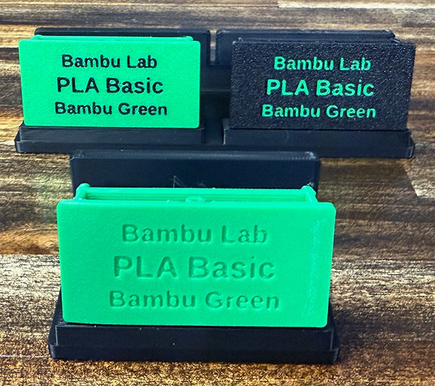

← Home
Filament Clip Studio
Build readable, color-aware filament clip labels for Bambu Lab, Cookiecad, Amolen, Sunlu and Jayo spools (each clip is fitted and tested for its brand’s spool; Sunlu’s 1 kg rolls and Jayo’s 1.1 kg reusable spools use the Bambu Lab clip; see supported spools). The browser edition creates one multi-plate 3MF project and an import-ready CSV on your device.
Quick start
- Add a label row, then choose the manufacturer, filament type, color/name, and quantity. Add as many rows as needed.
- For a larger batch, use the Google Sheets CSV builder. Copy its rows into Paste rows, or download its CSV and select Import CSV in the studio. Choose whether to add the rows or replace the current batch.
- Review the label previews and the plate plan. If a long name is shortened, read the warning and accept the shortened text before generation.
- Choose Generate batch. The download contains one 3MF project with the packed plates and a
Labels.csvcopy of the generated labels. - Open the 3MF in Bambu Studio, confirm the filament assignments and support preview, then slice.
Using the Google Sheets CSV builder
The Google Sheet is a guided way to create valid import rows. Opening the link asks you to make your own copy (a Google account is required); the shared original is view-only. In your copy, open the Labels tab, choose a manufacturer first, then a filament type and a color/name from the matching catalog, and enter a quantity. Every row must show ✓ OK in the Status column, and a batch holds up to 100 clips.
When the batch status reads ✓ Batch ready, the Export CSV button turns green. Click it to open the CSV export tab. The quickest route: select the rows there, copy them, choose Paste rows in the studio, paste and select Import pasted rows. Alternatively choose File > Download > Comma Separated Values (.csv) and import that file with Import CSV.
The builder's Catalog tab loads the studio catalog directly from downloads/catalog.csv on this site, so both always offer the same manufacturer, type and color combinations.
The studio also accepts a CSV made by another tool when it uses the columns manufacturer, filament_type, color_name, quantity.
Holders and mounting templates
Clip holders (one, two or four posts) mount on AMS units, dryers and shelves. Mounting templates center a holder on a specific device: the AMS 2 Pro, AMS HT and Creality SpacePi X4. To print them with your labels, enter your device counts under Holders & mounting templates in the studio: each AMS HT gets a one-post holder, each AMS 2 Pro a four-post holder and each SpacePi X4 two two-post holders, plus one template per device type. They print flat on their own plates. The four-post holder is 320 mm long; on smaller printers the studio uses the split four-post holder instead, two halves joined by a dovetail. You can also download the STLs from the holders and mounting templates page.

Mounting a holder
Clean both surfaces, the spot on the device and the back of the holder, with isopropyl alcohol and let them dry. Dry-fit before you apply the 24 mm double-sided nano tape, because it is hard to reposition once bonded. Each template works a little differently; follow the steps for your device: AMS 2 Pro, AMS HT or Creality SpacePi X4.

Style the batch
Label style
Choose a flat colored inlay with separate parts, or an engraved negative label. The 3MF keeps the generated parts selectable for slicer adjustments.
Filament choices
Clip body filament can use one shared filament, which defaults to black, or the catalog filament named on each label. Label text filament can use one shared filament, a contrasting filament, or the catalog filament named on each label. The contrasting shared text choice uses the project’s Bambu Green signature color.

- Top left: Flat colored inlay · Clip body filament: Actual Filament · Label text filament: Contrasting Filament.
- Top right: Flat colored inlay · Clip body filament: One filament (black) · Label text filament: Actual Filament.
- Front: Engraved · Clip body filament: Actual Filament. The text is cut into the body, so it prints in one filament.
Text sizes
Type field size controls the larger filament type line. Manufacturer field size and Color/name field size accept 0 for automatic sizing. The color/name line is shortened when necessary so it remains within the label width.
Printer and packing
Select the Bambu Lab printer that will be used. The studio uses that plate size and usable area when it packs the batch. Shared-filament batches combine variants to reduce plate count; Actual Filament batches keep each catalog combination grouped for easier color assignment.
NFC tag pockets
Choose Add NFC tag pockets under Style the batch to add a shallow 0.5 mm recess for a round NFC sticker (default 25 mm, with 0.4 mm clearance; set a smaller diameter for smaller tags). Clips with a holder sleeve get it centered on the back of the sleeve, the face that touches the spool. Clips without a sleeve get it on the back of the faceplate, left of the filament tunnel; on Cookiecad and Amolen clips there is not room for a full circle, so the pocket is trimmed flat on the tunnel and leg sides and you trim the sticker to match. We recommend the holder sleeve version: it is neater. Holders get a pocket on the underside, 4 mm back from the front edge and centered under each post, so a phone tapped on the front of the holder reads the tag. In the 3MF the sleeve and holder pockets are negative parts that Bambu Studio cuts when it slices.
Printers and slicers
Choose your printer by brand and bed size; each choice lists the models that share that bed. Then choose the slicer to open the project in. The 3MF is written the way that slicer reads it, so pick the slicer you will actually use.
- Bambu Studio: a full Bambu Lab project with the stock printer profile, prime tower and flush settings.
- Orca Slicer: works with every printer in the list, including Bambu Lab. The project carries a generic printer, so choose your own printer profile after opening it; the plate layout stays.
- Creality Print, ElegooSlicer, Anycubic Slicer Next: the same generic project, tagged for each slicer so it opens as a project.
- PrusaSlicer: a PrusaSlicer project (version 2.9 or later for separate plates). Open it as a project and keep the project settings. Sleeve batches leave 6 mm between clips, because PrusaSlicer rejects supported parts closer than that.
Filament system. Printers other than Bambu Lab default to One filament at a time. Labels are engraved into the clip body and each plate prints in one filament; the plate names say which filament each plate is for. Choose Multi-color system if you have a Creality CFS, Elegoo Canvas, Anycubic ACE or Prusa MMU (PrusaSlicer projects hold up to five filaments).
We checked these files by slicing them in Bambu Studio, Orca Slicer, ElegooSlicer and PrusaSlicer. Creality Print and Anycubic Slicer Next read the same format as Orca Slicer, but we could not check them from the command line. If either does not open a file correctly, please let us know which version you used.
Holder sleeves and supports
The holder sleeve is a collar on each clip that secures it in a holder on your AMS or dryer. It switches on automatically when you enter AMS or dryer units in the studio; turn it off if these clips are only for spools on a shelf.
- Set Holder sleeve to Include holder sleeve. The warning appears immediately.
- Keep the sleeve project’s text-side-down orientation. Do not remove the tunnel blocker.
- In Bambu Studio, inspect the support preview before slicing. The supplied project is configured for the tested support clearance and interface settings, but your material and printer profile can still affect the result.
Clips without a sleeve use the standing orientation and do not need the sleeve support workflow.
CSV validation and long names
Unrecognized manufacturer, filament type, or color combinations are skipped rather than added. After import, the studio reports the skipped CSV row numbers and values so you can correct them and import again.
Names that exceed the available text width are shortened to a readable abbreviation ending in one period. Generation pauses until you review and accept the shortened text.
Troubleshooting
- Nothing imported: confirm the CSV header names and check the import report for row numbers. The official catalog accepts the combinations listed in the studio.
- Text or colors need adjustment: change the style or shared filament choice before generating again. Assign the actual presets in Bambu Studio after opening the 3MF.
- Supports look different: inspect the sliced preview and adjust only after checking the generated support blockers and painted support regions. Sleeves are intended to be printed with supports.
- Need to move a batch: use the downloaded ZIP and CSV as a backup. Saved batches stay in the current browser on the current computer.
Privacy and catalog ownership
Generation runs in the browser; no account or paid server is required. Saved batches remain in that browser. The public application code is open source, while the official manufacturer, type, color, and spool catalog is maintained by the project owner.
Filament Clip Studio · browser edition · Change log